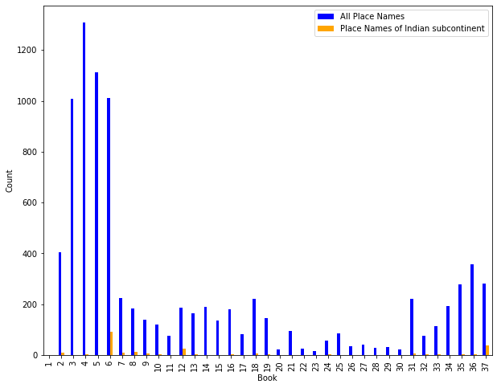
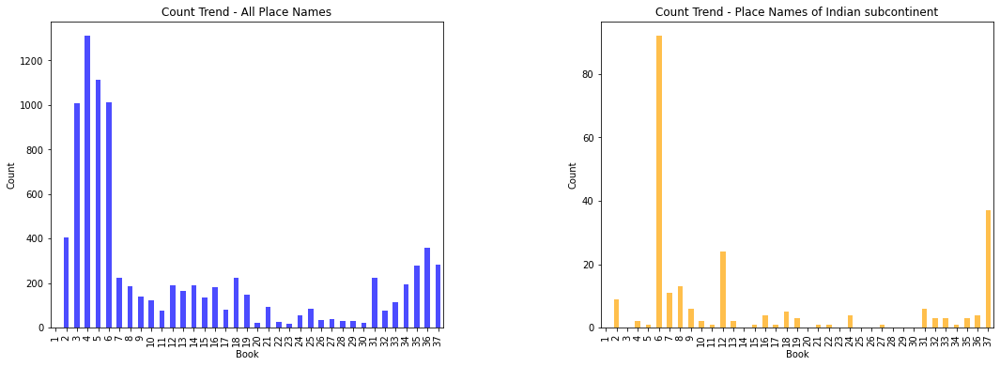
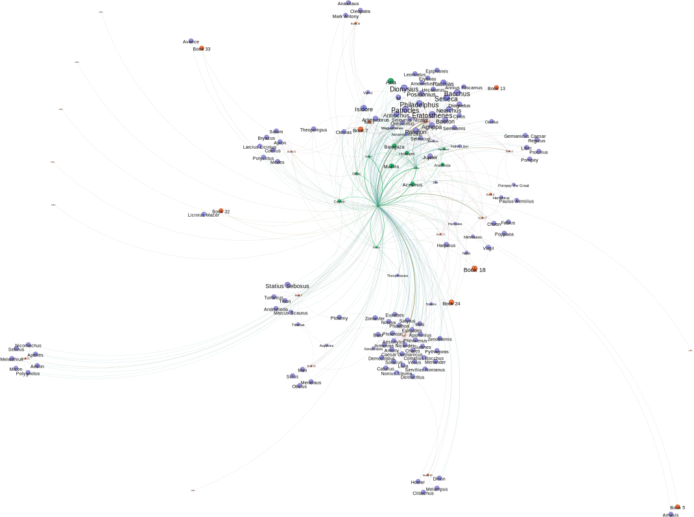

# libraries imported
from bs4 import BeautifulSoup
import future
import pandas as pd
import csv
import itertools
import uuid
import requests
import re
from IPython.display import display, Markdown
from tqdm import tqdm
tqdm.pandas()Mapping the spatial references in Pliny the Elder’s Natural History through distant reading
Abstract
this is an abstract
1 Research Question
Natural History stands as a monumental and comprehensive work compiled by the Roman scholar, Pliny the Elder, during the first century AD. This vast compendium encompasses a wide range of subjects, including natural phenomena, geography, anthropology, zoology, botany, and much more. Pliny’s extensive undertaking aimed to compile and organize the wealth of knowledge available at the time, showcasing the interconnectedness of the natural world and humanity’s place within it (Gibson and Morello 2011).
At the heart of this remarkable work lies the presence of place names, woven into the fabric of Pliny’s discourse. These place names not only denote specific geographic locations but also encapsulate the cultural, historical, and societal contexts in which they exist. They serve as signposts within the vast expanse of Natural History, guiding readers through diverse lands and illuminating the diverse experiences and knowledge associated with each place.
On the other hand, the portrayal and depiction of the places, particularly those located far beyond the borders of the Roman Empire, can provide valuable insights into the ways in which Pliny the Elder and his contemporaries perceived and conceptualized the world around them.
In this regards, this analysis aims to map not only the physical locations mentioned in the book, but also their role and position in the network of interconnections both for the lives and imaginations of the era.
Applying distant reading methodologies in the field of digital humanities, an exploration is conducted driven by the following questions: Which place names receive the most mentions throughout the entirety of Natural History? In what context are these prominent place names referenced? How do these place names provide insights into the daily lives, cultural contexts, and imaginative landscapes of the ancient world?
2 Data preparation
2.1 Scrape text with geographical annotation
The text of the whole book has been digitized and annotated with people’s name, places’ name and coordinates by TOPOSText project since 2012. This invaluable resource allows for the creation of a dataset that includes both the textual contents and geographical annotations, which can be utilized to investigate the distribution of place names in the entire text and examine the frequencies and patterns of geographically-related content.
# link for digitized text of Natural History_book1-11
url1 = "https://topostext.org/work/148"
# link for digitized text of Natural History_book12-37
url2 = "https://topostext.org/work/153"The geographical annotations can be parsed with Beautiful Soup library, and the first five returned annotations are shown as follows:
Code
# check the place names with annotation in the first part of the digitized book
response = requests.get(url1)
soup = BeautifulSoup(response.content, features="lxml")
links = soup.find_all("a", {"class": "place"})
for link in links[:5]:
print(link)<a about="https://topostext.org/place/380237SAca" class="place" lat="37.992" long="23.707">Academy</a>
<a about="https://topostext.org/place/419125LPal" class="place" lat="41.8896" long="12.4884">Palatine</a>
<a about="https://topostext.org/place/419125LEsq" class="place" lat="41.895" long="12.496">Esquiline</a>
<a about="https://topostext.org/place/419125SCap" class="place" lat="41.8933" long="12.483">Capitol</a>
<a about="https://topostext.org/place/419125PRom" class="place" lat="41.891" long="12.486">Rome</a>With defining a function, all the texts with the geographical annotations can be parsed and stored as a dataframe, containing information in 8 columns as:
1. Unique id assigned
2. ToposText_ID (which identifies the distinct coordinates)
3. Place name
4. Reference
5. Latitute
6. Longitute
7-9. Book, chapter and paragraph number the place mentioned in
8. Plain text of the paragraph where the place is mentioned
Code
# function for text with geographical name annotation scraping
def toposgeotext(url):
response = requests.get(url)
if response.status_code != 200:
raise FileNotFoundError("Failed to retrieve HTML content: " + url)
data = []
soup = BeautifulSoup(response.content, features="lxml")
links = soup.find_all("a", {"class": "place"})
for link in links:
Place_Name = link.contents[0] # Place name
ToposText_ID = link.get('about') # ToposText ID
Lat = link.get('lat')
Long = link.get('long')
Parent = link.find_parent("p")
Text = Parent.text # Extract related text
Reference = Parent.get("id") # Indicate book, chapter, paragraph
# Separate the information in Text using the regular expression pattern
match = re.search(r'§\s+(\d+\.\d+\.\d*)\s+(.*)$', Text)
if match:
Chapternparagraph = match.group(1) # Extract the reference from the pattern
Text = match.group(2) # Extract the remaining text from the pattern
# Extract the book, chapter, and paragraph components
book, chapter, paragraph = Chapternparagraph.split('.')
UUID4 = uuid.uuid4() # Create a unique ID
data.append({
'UUID4': UUID4,
'ToposText_ID': ToposText_ID,
'Place_Name': Place_Name,
'Reference': Reference,
'Lat': Lat,
'Long': Long,
'Book': book, # Add the book component to the DataFrame
'Chapter': chapter, # Add the chapter component to the DataFrame
'Paragraph': paragraph, # Add the paragraph component to the DataFrame
'Text': Text
})
df = pd.DataFrame(data)
# Convert data types to numeric
df['Book'] = pd.to_numeric(df['Book'], errors='coerce')
df['Chapter'] = pd.to_numeric(df['Chapter'], errors='coerce')
df['Paragraph'] = pd.to_numeric(df['Paragraph'], errors='coerce')
return df
# construct the dataframe for two parts of the digitized text with geographical annotations with the toposgeotext function
geodf1 = toposgeotext(url1)
geodf2 = toposgeotext(url2)
geotext_whole = pd.concat([geodf1, geodf2], ignore_index=True)
geotext_whole.to_csv('geotext_whole.csv')
geotext_whole.head()| UUID4 | ToposText_ID | Place_Name | Reference | Lat | Long | Book | Chapter | Paragraph | Text | |
|---|---|---|---|---|---|---|---|---|---|---|
| 0 | f48dd81b-a7d1-4c6f-b2d0-dcc9cb480ba1 | https://topostext.org/place/380237SAca | Academy | urn:cts:latinLit:phi0978.phi001:1.8.1 | 37.992 | 23.707 | 1 | 8 | 1.0 | For my own part I frankly confess that my work... |
| 1 | 1d6bc344-74ed-4195-bb2e-33ca5e3a1036 | https://topostext.org/place/419125LPal | Palatine | urn:cts:latinLit:phi0978.phi001:2.5.1 | 41.8896 | 12.4884 | 2 | 5 | 1.0 | For this reason I deem it a mark of human weak... |
| 2 | 81052451-d991-4d6c-9f0c-4c1148a5da70 | https://topostext.org/place/419125LEsq | Esquiline | urn:cts:latinLit:phi0978.phi001:2.5.1 | 41.895 | 12.496 | 2 | 5 | 1.0 | For this reason I deem it a mark of human weak... |
| 3 | cfb15562-df3e-4775-9d68-beefc89ed168 | https://topostext.org/place/419125SCap | Capitol | urn:cts:latinLit:phi0978.phi001:2.5.1 | 41.8933 | 12.483 | 2 | 5 | 1.0 | For this reason I deem it a mark of human weak... |
| 4 | 80c1e6b8-c8d0-4e1a-8770-a6c886d27e0f | https://topostext.org/place/419125PRom | Rome | urn:cts:latinLit:phi0978.phi001:2.6.3 | 41.891 | 12.486 | 2 | 6 | 3.0 | Below the sun revolves a very large star named... |
There are 5595 place names mentioned in book 1-11 and 3281 place named in book 12-37.
The combined dataframe for the whole book, has the shape of (8876, 10).
And the output has been stored as .csv for record.2.2 Scrape text of the entire book
The text of the entire book is also scraped as a reference.
Code
# function for scraping entire text from ToposText with given html
def topostext(url):
response = requests.get(url)
if response.status_code != 200:
raise FileNotFoundError("Failed to retrieve HTML content: " + url)
data = []
soup = BeautifulSoup(response.content, features="lxml")
links = soup.find_all("p") # Find all <p> tags instead of filtering by class
for link in links:
match = re.search(r'§\s+(\d+\.\d+\.\d*)\s+(.*)$', link.text)
if match:
Chapternparagraph = match.group(1) # Extract the reference from the pattern
# Extract the book, chapter, and paragraph components
book, chapter, paragraph = Chapternparagraph.split('.')
Text = match.group(2) # Extract the text from the pattern
Reference = link.get("id") # Indicate book, chapter, paragraph
UUID4 = uuid.uuid4() # Create a unique ID
data.append({
'UUID4': UUID4,
'Reference': Reference,
'Book': book, # Add the book component to the DataFrame
'Chapter': chapter, # Add the chapter component to the DataFrame
'Paragraph': paragraph, # Add the paragraph component to the DataFrame
'Text': Text
})
df = pd.DataFrame(data)
# Convert data types to numeric
df['Book'] = pd.to_numeric(df['Book'], errors='coerce')
df['Chapter'] = pd.to_numeric(df['Chapter'], errors='coerce')
df['Paragraph'] = pd.to_numeric(df['Paragraph'], errors='coerce')
return df
# construct the dataframe for two parts of the digitized text with the topostext function
df1 = topostext(url1)
df2 = topostext(url2)
# combine the two parts of scraped text
wholebook = pd.concat([df1, df2], ignore_index=True)
# store the sparsed text into csv file
wholebook.to_csv('wholebooktext.csv')
wholebook.head()| UUID4 | Reference | Book | Chapter | Paragraph | Text | |
|---|---|---|---|---|---|---|
| 0 | d935bd61-53b8-4a7c-9e32-d6e772c58c91 | urn:cts:latinLit:phi0978.phi001:1.1.1 | 1 | 1 | 1.0 | PREFACE IN THE FORM OF A LETTER: PLINIUS SECUN... |
| 1 | bd2725e2-fb3f-4803-987d-9b195c0b8614 | urn:cts:latinLit:phi0978.phi001:1.2.1 | 1 | 2 | 1.0 | But who could judge the value of these composi... |
| 2 | 4fd226cf-ca50-47da-842d-643785d1939a | urn:cts:latinLit:phi0978.phi001:1.3.1 | 1 | 3 | 1.0 | But if Lucilius, the originator of critical sn... |
| 3 | 8fffae25-8787-401d-854f-c74ed26ff89f | urn:cts:latinLit:phi0978.phi001:1.4.1 | 1 | 4 | 1.0 | My own presumption has indeed gone further, in... |
| 4 | 28cc5766-5097-4f75-9760-de0713387205 | urn:cts:latinLit:phi0978.phi001:1.5.1 | 1 | 5 | 1.0 | For my own part I am of opinion that a special... |
The combined dataframe for texts in the whole book has the shape of (3493, 6).
And the output has been stored as .csv for record.3 Overview of geographical related texts
What topics popped up from the context of place names?
3.1 Distribution of place names in the entire book
To calculate a normalized frequency of place name references in Natural History, the word length and the occurencies of place names in each book is counted respectively (Table 1). As shown in Figure 1, books 3-6 has the most references to place names with the length of the book taken into consideration. Which incorporates the categorization of Natural History, which carrying the theme of “Geography and ethnography”.
Code
# Group the items by "Book" and calculate the total word length
book_word_lengths = wholebook.groupby('Book')['Text'].apply(lambda x: x.str.split().str.len().sum()).reset_index()
book_word_lengths.columns = ['Book', 'Total_length']
# Set the "Book" column as the index
book_word_lengths.set_index('Book', inplace=True)
place_counts = geotext_whole['Book'].value_counts().reset_index()
place_counts.columns = ['Book', 'Place_count']
place_counts.set_index('Book', inplace=True)
place_distribution = book_word_lengths.merge(place_counts, on='Book')
place_distribution['Place_freq'] = place_distribution['Place_count']/place_distribution['Total_length']
place_distribution| Total_length | Place_count | Place_freq | |
|---|---|---|---|
| Book | |||
| 1 | 2778 | 1 | 0.000360 |
| 2 | 30570 | 406 | 0.013281 |
| 3 | 18037 | 1007 | 0.055830 |
| 4 | 15434 | 1309 | 0.084813 |
| 5 | 18872 | 1112 | 0.058923 |
| 6 | 27890 | 1012 | 0.036285 |
| 7 | 21204 | 225 | 0.010611 |
| 8 | 24176 | 185 | 0.007652 |
| 9 | 19197 | 140 | 0.007293 |
| 10 | 20816 | 121 | 0.005813 |
| 11 | 27345 | 77 | 0.002816 |
| 12 | 13906 | 188 | 0.013519 |
| 13 | 13243 | 164 | 0.012384 |
| 14 | 15277 | 189 | 0.012372 |
| 15 | 14552 | 135 | 0.009277 |
| 16 | 25442 | 180 | 0.007075 |
| 17 | 29387 | 82 | 0.002790 |
| 18 | 35850 | 222 | 0.006192 |
| 19 | 18822 | 146 | 0.007757 |
| 20 | 22743 | 21 | 0.000923 |
| 21 | 17896 | 95 | 0.005308 |
| 22 | 16491 | 24 | 0.001455 |
| 23 | 15764 | 17 | 0.001078 |
| 24 | 17491 | 56 | 0.003202 |
| 25 | 16734 | 85 | 0.005079 |
| 26 | 15448 | 35 | 0.002266 |
| 27 | 12444 | 40 | 0.003214 |
| 28 | 26476 | 28 | 0.001058 |
| 29 | 13976 | 31 | 0.002218 |
| 30 | 14395 | 23 | 0.001598 |
| 31 | 12204 | 222 | 0.018191 |
| 32 | 14635 | 76 | 0.005193 |
| 33 | 17946 | 113 | 0.006297 |
| 34 | 18972 | 193 | 0.010173 |
| 35 | 21282 | 277 | 0.013016 |
| 36 | 21295 | 357 | 0.016764 |
| 37 | 22255 | 282 | 0.012671 |
Code
fig, ax = plt.subplots(figsize=(10, 3)) # Adjust the figsize to increase the plot size
place_distribution['Place_freq'].plot.bar(ax=ax)
plt.xlabel('Book')
plt.ylabel('Frequency')
# Adjust the plot alignment
plt.tight_layout(rect=[0, 0, 0.8, 1]) # Change the rect values to adjust the alignment
plt.show()
4 Prominent place name in Natural History
What place stands out in the narrative? And how does it incooporate with the scope and concept of Natural History?
4.1 Place name distribution
By grouping the “ToposText_ID” (as indicator for distinct geographical loactions in the text) in the earlier generated dataframe, there are 2052 unique places mentioned in Natural History.
The top 20 most frequent place names mentioned (as 1% of total) in Natural History is shown in Table 2.
Code
## sort the top 1% places referred in descending order
place = geotext_whole.groupby('ToposText_ID')[['Place_Name','Lat','Long']].value_counts().reset_index(name='Count')
sorted_place = place.sort_values(by='Count', ascending=False)
top_count = sorted_place.iloc[19]['Count']
topplace = sorted_place[sorted_place['Count'] >= top_count]
topplace| ToposText_ID | Place_Name | Lat | Long | Count | |
|---|---|---|---|---|---|
| 1687 | https://topostext.org/place/406163RIta | Italy | 40.6 | 16.3 | 292 |
| 2034 | https://topostext.org/place/419125PRom | Rome | 41.891 | 12.486 | 269 |
| 52 | https://topostext.org/place/271307REgy | Egypt | 27.1 | 30.7 | 261 |
| 82 | https://topostext.org/place/300740RInd | India | 30 | 74 | 167 |
| 57 | https://topostext.org/place/280400RAra | Arabia | 28 | 40 | 123 |
| 320 | https://topostext.org/place/355390RSyr | Syria | 35.5 | 39 | 109 |
| 255 | https://topostext.org/place/350330RCyp | Cyprus | 35 | 33 | 85 |
| 109 | https://topostext.org/place/312301WNil | Nile | 30.0918 | 31.2313 | 85 |
| 2282 | https://topostext.org/place/441073LAlp | Alps | 44.142 | 7.343 | 82 |
| 766 | https://topostext.org/place/376145RSic | Sicily | 37.6 | 14.5 | 71 |
| 275 | https://topostext.org/place/352252IKre | Crete | 35.2052 | 25.1836 | 64 |
| 7 | https://topostext.org/place/130350REth | Ethiopia | 13.01 | 35.01 | 58 |
| 417 | https://topostext.org/place/364282IRho | Rhodes | 36.4408 | 28.2244 | 56 |
| 966 | https://topostext.org/place/380237PAth | Athens | 37.9718 | 23.72793 | 56 |
| 2043 | https://topostext.org/place/419125SCap | Capitol | 41.8933 | 12.483 | 52 |
| 298 | https://topostext.org/place/353403WEup | Euphrates | 35.2791 | 40.2708 | 47 |
| 2241 | https://topostext.org/place/435335WPon | Pontus | 43.5 | 33.5 | 47 |
| 1839 | https://topostext.org/place/411146RCam | Campania | 41.1 | 14.6 | 46 |
| 1480 | https://topostext.org/place/397443RArm | Armenia | 39.702 | 44.298 | 45 |
| 17 | https://topostext.org/place/195390WEry | Red Sea | 19.5 | 39 | 42 |
| 545 | https://topostext.org/place/369103PCar | Carthage | 36.85 | 10.32 | 42 |
| 602 | https://topostext.org/place/370340RCil | Cilicia | 37.01 | 34.01 | 42 |
The place names mentioned in Natural History are pinned on a map based on their coordinates annotation, and there is a dot for each place with the size and color demonstrating the frequency it is mentioned in the book. The bigger and the darker the color of the dot, the more frequent the place is mentioned in Natural History.
An intriguing observation from the output, as depicted in Figure 2, is the prominence of India—a region outside the Mediterranean—despite its high frequency of mentions.
Code
import folium
from branca.colormap import LinearColormap
# Create a Folium map centered on a specific location
map = folium.Map(location=[32, 53], zoom_start=3)
# Define the minimum and maximum count values for the color scale
min_count = place['Count'].min()
max_count = place['Count'].max()
# Create a color map based on the count values
color_map = LinearColormap(colors=['#FFCC00', '#FF6600'],
vmin=min_count,
vmax=max_count)
# Iterate over each row in the dataframe
for index, row in place.iterrows():
place_name = row['Place_Name']
count = row['Count']
latitude = row['Lat']
longitude = row['Long']
# Get the color based on the count using the color map
color = color_map(count)
# Create a circle marker with a size based on the count and color based on the count
folium.CircleMarker(
location=[latitude, longitude],
radius=count/10, # Adjust the size of the marker based on the count
weight=0,
fill=True,
fill_color=color,
fill_opacity=1,
tooltip=f'{place_name}: {count} counts'
).add_to(map)
# Add the color scale to the map
color_map.caption = 'Count'
color_map.add_to(map)
# Display the map
mapMake this Notebook Trusted to load map: File -> Trust Notebook
4.2 Zooming into “India”
As highlighted in the research conducted by Nappo (2017), the era of Pliny the Elder’s writing of Natural History witnessed a thriving Indo-Roman trade relationship. The prominence of the term “India” within the text suggests that this trade connection holds considerable significance in the narrative of Natural History.
To gain a deeper understanding and provide more comprehensive contextual analysis, it becomes crucial to extend the focus beyond solely “India” to the regions that encompass the empires of the Indian subcontinent. The approximate range of coordinates defining the target region is:1
Latitude: Northernmost point: Approximately 37.6 degrees North (located in the region of Jammu and Kashmir in India) Southernmost point: Approximately 5.5 degrees North (located in the region of Dondra Head in Sri Lanka)
Longitude: Westernmost point: Approximately 60.9 degrees East (located in the region of Gwadar in Pakistan) Easternmost point: Approximately 97.4 degrees East (located in the region of Kibithu in India)
And a dataframe for Indian subcontinent related texts can be filetered with the captioned coordinate range.
Code
# convert the 'Lat' and 'Long' information in the original dataframe to numeric format
geotext_whole['Lat'] = geotext_whole['Lat'].astype(float)
geotext_whole['Long'] = geotext_whole['Long'].astype(float)
# define the filter range of latitude and longitude ranges for Indian subcontinent
lat_range = (5.5, 37.6)
long_range = (60.9, 97.4)
# create a boolean mask for filtering
mask = (geotext_whole['Lat'].between(*lat_range)) & (geotext_whole['Long'].between(*long_range))
# apply the mask to filter the dataframe
geotext_india = geotext_whole[mask]
geotext_india.to_csv('geotext_indianregion.csv')
geotext_india.head()| UUID4 | ToposText_ID | Place_Name | Reference | Lat | Long | Book | Chapter | Paragraph | Text | |
|---|---|---|---|---|---|---|---|---|---|---|
| 85 | d2aaed30-b26b-489d-8784-6aa913f7a7f4 | https://topostext.org/place/300740RInd | India | urn:cts:latinLit:phi0978.phi001:2.75.1 | 30.0000 | 74.0000 | 2 | 75 | 1.0 | Similarly it is reported that at the town of S... |
| 92 | e8e8a157-9af3-4249-aea2-e92fe415dc54 | https://topostext.org/place/300740RInd | India | urn:cts:latinLit:phi0978.phi001:2.75.1 | 30.0000 | 74.0000 | 2 | 75 | 1.0 | Similarly it is reported that at the town of S... |
| 93 | b7ee0bc0-ebca-4be7-af7e-2ab0729347cd | https://topostext.org/place/300740RInd | India | urn:cts:latinLit:phi0978.phi001:2.75.1 | 30.0000 | 74.0000 | 2 | 75 | 1.0 | Similarly it is reported that at the town of S... |
| 218 | 0ad41816-f4a6-4bbb-8649-158955007752 | https://topostext.org/place/254683WInd | Indus | urn:cts:latinLit:phi0978.phi001:2.98.1 | 25.4487 | 68.3192 | 2 | 98 | 1.0 | Near the town of Harpasa in Asia stands a jagg... |
| 326 | d29a0ad1-4bda-47e6-b13a-3438d5353a6b | https://topostext.org/place/340670RBac | Bactria | urn:cts:latinLit:phi0978.phi001:2.110.1 | 36.7680 | 66.9010 | 2 | 110 | 1.0 | But among mountain marvels — Etna always glows... |
The shape of the filtered dateframe for texts and place coordinates related to Indian-subcontinent is (241, 10). And the dataframe is also stored as .csv for further reference.
And the places refered in the captioned region in the data frame are: [‘India’ ‘Indus’ ‘Bactria’ ‘Ganges’ ‘Acesinus’ ‘Oxus’ ‘Hydaspes’ ‘Taprobane’ ‘Arachosia’ ‘Muziris’ ‘Baragaza’ ‘Aria’ ‘Ceylon’].
The comparison between the total number of place names and the place names specifically related to the Indian subcontinent, as mentioned in each book, is depicted in Figure 3. The difference in numbers between the two categories is significant, as indicated by the large disparity.
To facilitate a more effective comparison of the referencing trends across different books, Figure 4 presents subplots with varying y-axis scales. This approach allows for a clearer visualization of the trends and patterns in place name references throughout the various books.
Code
import matplotlib.pyplot as plt
# Compute the grouped count of place names in the current DataFrame
allplacecount = geotext_whole.groupby('Book')['Chapter'].count()
# Compute the grouped count of place names in the other DataFrame
indianplacecount = geotext_india.groupby('Book')['Place_Name'].count()
# Combine the counts into a single DataFrame
combined_counts = pd.concat([allplacecount, indianplacecount], axis=1)
combined_counts.columns = ['All Place Names', 'Place Names of Indian subcontinent']
combined_counts.fillna(0, inplace=True)
fig, ax = plt.subplots(figsize=(10, 8))
# Plot the combined counts as a bar chart with different colors
combined_counts.plot.bar(color=['blue', 'orange'], ax=ax)
# Customize the plot
ax.set_xlabel('Book')
ax.set_ylabel('Count')
# Show the plot
plt.show()
Code
# Set up the figure and axes for the subplots
fig, (ax1, ax2) = plt.subplots(1, 2, figsize=(18, 6))
# Plot the bar chart for 'All Place Names' on the first subplot
combined_counts['All Place Names'].plot(kind='bar', ax=ax1, color='blue', alpha=0.7)
ax1.set_xlabel('Book')
ax1.set_ylabel('Count')
ax1.set_title('Count Trend - All Place Names')
# Plot the bar chart for 'Other Place Names' on the second subplot
combined_counts['Indian Names'].plot(kind='bar', ax=ax2, color='orange', alpha=0.7)
ax2.set_xlabel('Book')
ax2.set_ylabel('Count')
ax2.set_title('Count Trend - Place Names of Indian subcontinent')
# Adjust the spacing between subplots
plt.subplots_adjust(wspace=0.4)
# Show the plot
plt.show()
The figures reveal a distinct difference between the occurrence trends of place names related to the Indian subcontinent and all place names collectively. Specifically, the referencing of the Indian subcontinent is highly concentrated in books 6, 12, and 37 of Pliny’s narrative. This discrepancy indicates that the mentioning of place names from the Indian subcontinent is closely tied to specific themes and topics within Pliny’s work.
In this regard, three methodologies have been employed to analyze the texts pertaining to the Indian subcontinent in Pliny’s work, including collocation analysis, topic modeling, and network analysis. The objective of these analyses is to delve deeper into the textual content, unraveling the intricate relationships and uncovering the underlying themes and connections associated with the place names of the Indian subcontinent.
Through collocation analysis, the aim is to identify significant word combinations and phrases that co-occur with the place names of the Indian subcontinent. This analysis provides insights into the specific linguistic patterns and contextual associations surrounding these locations, shedding light on their cultural, historical, and geographical significance.
Topic modeling allows for a broader exploration of the thematic landscape within which the Indian subcontinent place names are embedded. By clustering related words and identifying prevalent topics, this methodology helps to discern the major themes and subject matters that emerge from Pliny’s narrative, providing a comprehensive understanding of the broader context in which these place names are referenced.
Furthermore, network analysis offers a visual representation of the interconnections among the place names of the Indian subcontinent and other entities in Pliny’s work. By examining the patterns of co-occurrence and the relationships between different locations, this analysis uncovers the geographical and conceptual networks that exist within the text, revealing how the Indian subcontinent place names contribute to the overall structure and narrative flow of Natural History.
Together, these methodologies aim to provide a nuanced and comprehensive exploration of the texts related to the Indian subcontinent in Natural History. By delving into the linguistic, thematic, and network aspects of these place names, a deeper understanding of their significance and their role in shaping Pliny’s narrative can be achieved.
4.2.3 Network analysis about Indian subcontinent region related texts
Two separate network analyses were conducted. The first analysis focused on exploring the relationships between place names mentioned throughout the entire book. The second analysis specifically examined the name entities of people and place names associated with the Indian subcontinent regions. Nodes and edges were generated for both analyses and imported into Gephi for visualization. By studying the clustering patterns of place names and people in the resulting network graphs, valuable insights can be gained into both the overall context of the book and the specific context of the Indian subcontinent within Natural History.
Code
# define a function for generating the edge data for co-occurence of two places in a same paragraph
def place_name_edge (inputdf):
co_occurrence = pd.DataFrame(columns=['source', 'target'])
for i in range(len(inputdf)):
for j in range(i+1, len(inputdf)):
place1 = inputdf['Place_Name'].iloc[i]
place2 = inputdf['Place_Name'].iloc[j]
if place1 == place2:
continue
if geotext_whole['Book'].iloc[i] == geotext_whole['Book'].iloc[j]:
if geotext_whole['Chapter'].iloc[i] == geotext_whole['Chapter'].iloc[j]:
if geotext_whole['Paragraph'].iloc[i] == geotext_whole['Paragraph'].iloc[j]:
co_occurrence = pd.concat([co_occurrence, pd.DataFrame({'source': [place1], 'target': [place2]})], ignore_index=True)
return co_occurrence
# store the edges and nodes generated for network analysis about place names in the entire book
geonameco = place_name_edge(geotext_whole)
geonameco.rename(columns={'Place1': 'source', 'Place2': 'target'}, inplace=True)
geonameco.to_csv('geonameco.csv', index=False)
unique_places = pd.DataFrame(geotext_whole['Place_Name'].drop_duplicates()).rename(columns={'Place_Name': 'id'})
unique_places['label'] = unique_places['id']
unique_places.to_csv('place_nodes.csv', index=False)In the network analysis for place names throughout the entire book, unique place names are seen as nodes, and once two place names co-occur in the same paragraph, it will be counted as one edge. There are total 2255 nodes and 52602 edges in the prepared data.
As shown in Figure 7, the size of the node represents the betweeness centrality a place name mentioned in the book, and the weight of edge between two nodes represents the time the two place names appeared in the same paragraph (as seen in the same context). Gone through a Force Atlas 2 layout algorithm, the graph also demonstrates the rough cluster of place names which tend to be mentioned together.
In the case of “India”, it is observed mostly incooperates with “Egypt”, “Arabia” and “Nille”, which tend to be appearing in the description of trading route.
Code
from IPython.display import Image
Image(filename='geonamenw.png')
To gain a more detailed cluster of narrative contents about Indian subcontinent in Natural History, the idea is to generate a network for book number, place names and people’s names in the target corpus. The person name nodes are retrieved from the tagging of text given by the pretrained multilingual Name Entity Recognition model WikiNEuRal (Tedeschi et al. 2021). (will further compare with scraping person name annotations from ToposText, to see which way gets more accurate information)
The tags for name entity groups retrieved from WikiNEuRal model is appended as a new column in the corpus dataframe. And the tags as “PER”, which means “person name” are further extracted as another column.
Code
# apply the NER model to the Indian subcontinent related texts and store the retrieved tags in a new column
geotext_india['Text_ner'] = geotext_india['Text'].progress_apply(ner)
# append the words with tag as "PER" i.e. person name into the dataframe
geotext_india['PER_names'] = geotext_india['Text_ner'].apply(lambda x: [entity['word'] for entity in x if entity['entity_group'] == 'PER'])
geotext_india[['Place_Name','Book','Chapter','Paragraph','Text_ner','PER_names']].head()| Place_Name | Book | Chapter | Paragraph | Text_ner | PER_names | |
|---|---|---|---|---|---|---|
| 85 | India | 2 | 75 | 1.0 | [{'entity_group': 'LOC', 'score': 0.99636984, ... | [Onesicritus, Alexander, Alexander, Onesicritus] |
| 92 | India | 2 | 75 | 1.0 | [{'entity_group': 'LOC', 'score': 0.99636984, ... | [Onesicritus, Alexander, Alexander, Onesicritus] |
| 93 | India | 2 | 75 | 1.0 | [{'entity_group': 'LOC', 'score': 0.99636984, ... | [Onesicritus, Alexander, Alexander, Onesicritus] |
| 218 | Indus | 2 | 98 | 1.0 | [{'entity_group': 'LOC', 'score': 0.999539, 'w... | [] |
| 326 | Bactria | 2 | 110 | 1.0 | [{'entity_group': 'LOC', 'score': 0.87196684, ... | [Ctesias, Theopompus] |
The rows containing no person name were dropped and those with multiple person name records were exploded to separate rows.
Code
geotext_india_exploded = geotext_india.explode('PER_names')
geotext_india_exploded.dropna(subset=['PER_names'], inplace=True)
geotext_india_exploded[['Place_Name', 'Book','PER_names']]| Place_Name | Book | PER_names | |
|---|---|---|---|
| 85 | India | 2 | Onesicritus |
| 85 | India | 2 | Alexander |
| 85 | India | 2 | Alexander |
| 85 | India | 2 | Onesicritus |
| 92 | India | 2 | Onesicritus |
| ... | ... | ... | ... |
| 8842 | India | 37 | Jupiter |
| 8847 | India | 37 | Xenocrates |
| 8866 | Indus | 37 | Democritus |
| 8873 | India | 37 | Nature |
| 8873 | India | 37 | Nature |
467 rows × 3 columns
Within the Indian subcontinent context, there are four types of edges are further recorded and combined, including the co-occurence of:
1. place name and person name in the same paragraph
2. person name and book number
3. place name and book number
4. two place names
And the nodes consist of three types, namely place name, person name and book number.
Code
edge1 = geotext_india_exploded[['Place_Name', 'PER_names']]
edge1.rename(columns={'Place_Name': 'source', 'PER_names': 'target'}, inplace=True)
edge2 = geotext_india_exploded[['PER_names','Book']]
edge2.rename(columns={'PER_names': 'source', 'Book': 'target'}, inplace=True)
edge3 = geotext_india[['Place_Name', 'Book']]
edge3.rename(columns={'Place_Name': 'source', 'Book': 'target'}, inplace=True)
edge4 = place_name_edge(geotext_india)
# combine the four types of edges and save to .csv
combined_edge = pd.concat([edge1, edge2, edge3, edge4], axis=0)
combined_edge = combined_edge.reset_index(drop=True)
combined_edge.to_csv('indiatext_edge.csv', index=False)
node1 = pd.DataFrame(geotext_india['Place_Name'].drop_duplicates()).rename(columns={'Place_Name': 'id'})
node1['label'] = node1['id']
node1['type'] = 'Place_Name'
node2 = pd.DataFrame(geotext_india['Book'].drop_duplicates()).rename(columns={'Book': 'id'})
node2['label'] = 'Book ' + node2['id'].astype(str)
node2['type'] = 'Book'
node3 = pd.DataFrame(geotext_india_exploded['PER_names'].drop_duplicates()).rename(columns={'PER_names': 'id'})
node3['label'] = node3['id']
node3['type'] = 'Person_Name'
# combine the three types of nodes and save to .csv
combined_node = pd.concat([node1, node2, node3], axis=0)
combined_node = combined_node.reset_index(drop=True)
combined_node.to_csv('indiatext_node.csv', index=False)
node_count2 = len(combined_node)
edge_count2 = len(combined_edge)
display(Markdown("""In the network analysis for place names and person names within the Indian subcontinent context, there are total {node_count} nodes
and {edge_count} edges in the prepared data.
""".format(node_count = node_count2, edge_count = edge_count2)))In the network analysis for place names and person names within the Indian subcontinent context, there are total 164 nodes and 1458 edges in the prepared data.
As manifested in Figure 8, there is obvious clustering of person names occuring in Indian subcontinent related texts. In other words, groups of person names are tend to be referenced in some specific topics. (more detailed illustration will be further conducted)
Code
from IPython.display import SVG
# Specify the path to your SVG file
svg_path = "india_person_nw.svg"
# Display the SVG file
SVG(filename=svg_path)
5 Conclusion
5.1 Dialouge with the literature
There will be the conclusion of the overall findings and dialouge with other literature.
5.2 In terms of digital methodology
There will be some reflections about the application of digital distant reading methodologies.
References
Gibson, Roy, and Ruth Morello, eds. 2011. Pliny the Elder: Themes and Contexts. Brill. https://brill.com/edcollbook/title/14893.
Murphy, Trevor. 2003. “11. Pliny’s Naturalis Historia: The Prodigal Text.” In, 301–22. BRILL. https://doi.org/10.1163/9789004217157_012.
Nappo, Dario. 2017. Money and Flows of Coinage in the Red Sea Trade. Vol. 1. Oxford University Press. https://doi.org/10.1093/oso/9780198790662.003.0017.
Pollard, Elizabeth Ann. 2009. “Pliny’s <i>Natural History</i> and the Flavian <i>Templum Pacis</i>: Botanical Imperialism in First-Century <Small Class="caps" Xmlns:m="http://Www.w3.org/1998/Math/MathML" Xmlns:mml="http://Www.w3.org/1998/Math/MathML" Xmlns:xlink="http://Www.w3.org/1999/Xlink">c.e</Small>. Rome.” Journal of World History 20 (3): 309–38. https://doi.org/10.1353/jwh.0.0074.
Tedeschi, Simone, Valentino Maiorca, Niccolò Campolungo, Francesco Cecconi, and Roberto Navigli. 2021. “WikiNEuRal: Combined Neural and Knowledge-Based Silver Data Creation for Multilingual NER.” In, 25212533. Punta Cana, Dominican Republic: Association for Computational Linguistics. https://aclanthology.org/2021.findings-emnlp.215.
Tran, Khuyen. 2022. “pyLDAvis: Topic Modelling Exploration Tool That Every NLP Data Scientist Should Know.” https://neptune.ai/blog/pyldavis-topic-modelling-exploration-tool-that-every-nlp-data-scientist-should-know.
Footnotes
Given the challenges in determining the precise coordinates of the Empires in the Indian region during the 1st century AD, an approximate range of coordinates for the current Indian subcontinent is used as a rough estimation.↩︎